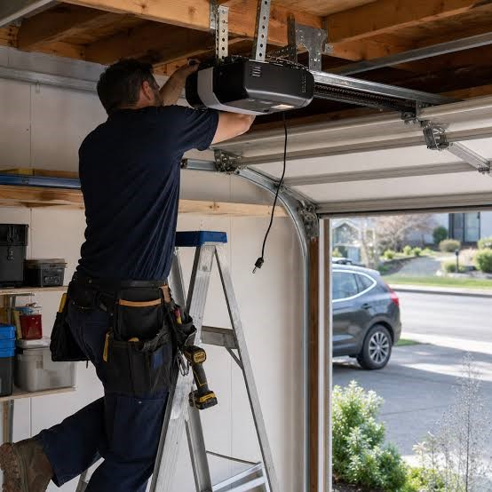

Asistencia técnica profesional, rápida y garantizada para particulares, comunidades y empresas en Granada. Solucionamos cualquier avería e instalación con repuestos de máxima calidad.

Revisiones periódicas y puestas a punto de componentes mecánicos y electrónicos. Aseguramos el cumplimiento de la normativa vigente de seguridad y evitamos paradas inesperadas o averías costosas.
Asistencia técnica especializada para solucionar cualquier fallo o bloqueo en puertas automáticas y motores. Diagnosticamos y reparamos con rapidez utilizando repuestos originales de máxima fiabilidad.
Montaje, motorización y configuración de todo tipo de puertas y automatismos. Trabajamos con fabricantes líderes para garantizar instalaciones robustas, silenciosas y con marcado CE.
Prestamos servicio técnico especializado en *Granada capital, área metropolitana* (Armilla, Maracena, Albolote, Las Gabias, Churriana de la Vega) y resto de municipios de la provincia. Nos desplazamos a comunidades de propietarios, residenciales, comercios y polígonos industriales para garantizar la máxima rapidez en cada asistencia.
🕒 Lunes a Viernes de :00 a 15:00
Atención al cliente y soporte técnico operativo durante toda la jornada laboral para la gestión de incidencias, presupuestos y revisiones normativas.
Manten la calma. Todas las puertas automáticas disponen de un sistema de desbloqueo manual mediante llave, maneta o cordón para poder abrirlas a mano en caso de fallo eléctrico o avería. Si no consigues desbloquearla, llámanos de inmediato para que un técnico se desplace a ayudarte.
Disponemos de un servicio de asistencia rápida para emergencias. Normalmente, nuestro equipo técnico se desplaza a tu ubicación en un plazo de menos de 2 a 4 horas (según disponibilidad y zona) para solucionar la avería lo antes posible y garantizar tu seguridad.
Trabajamos con todo tipo de puertas mecánicas y automatismos, ya sean residenciales, comunitarias, comerciales o industriales. Esto incluye puertas seccionales, basculantes, correderas, batientes, persianas enrollables y barreras de acceso de cualquier marca del mercado.
Sí, es totalmente obligatorio. La obligatoriedad viene recogida en el Código Técnico de la Edificación (CTE), en su documento DB-SUA 2, y está regulada por el Ministerio de Industria. Esta normativa dictamina que las puertas automáticas son consideradas máquinas y deben mantenerse conforme a las normas europeas UNE-EN 12635 y UNE-EN 13241-1. El propietario de la instalación es el responsable civil y penal en caso de accidente si la puerta carece de mantenimiento reglado.
Los plazos mínimos los estipula la norma UNE 85121 según el uso: para puertas de industrias o comercios y comunidades con más de 50 vehículos, el mantenimiento obligatorio debe ser trimestral; en comunidades de menos de 50 vehículos, semestral; y en puertas residenciales de viviendas unifamiliares, al menos anual.
El marcado CE es un requisito legal obligatorio derivado de la Directiva Europea de Productos de Construcción y la Directiva de Máquinas (Directiva 2006/42/CE). Certifica que la puerta cumple unos estándares mínimos que evitan aplastamientos o atrapamientos. Motorizar una puerta manual o cambiar un cuadro de maniobras modifica la máquina; por ley, requiere una actualización del marcado CE y la emisión de una nueva Declaración de Conformidad.
Sí, elaboramos presupuestos completamente gratuitos y sin compromiso para nuevas instalaciones o sustituciones de puertas y motores. Un técnico puede visitar tu casa o negocio para evaluar el espacio, tomar medidas y asesorarte sobre la mejor opción para tus necesidades.
Un contrato de mantenimiento preventivo te garantiza tranquilidad total. Incluye revisiones mecánicas y electrónicas programadas, prioridad de asistencia en caso de avería urgente, tarifas reducidas en mano de obra y repuestos, y la cumplimentación del libro de mantenimiento exigido por la ley.
Todas nuestras reparaciones e instalaciones cuentan con garantía conforme a la legislación vigente, tanto en la mano de obra como en los repuestos originales utilizados. Aceptamos pagos mediante transferencia bancaria y tarjeta de crédito/débito una vez finalizado y verificado el servicio.
Rellena el formulario y un técnico se pondrá en contacto contigo enseguida.